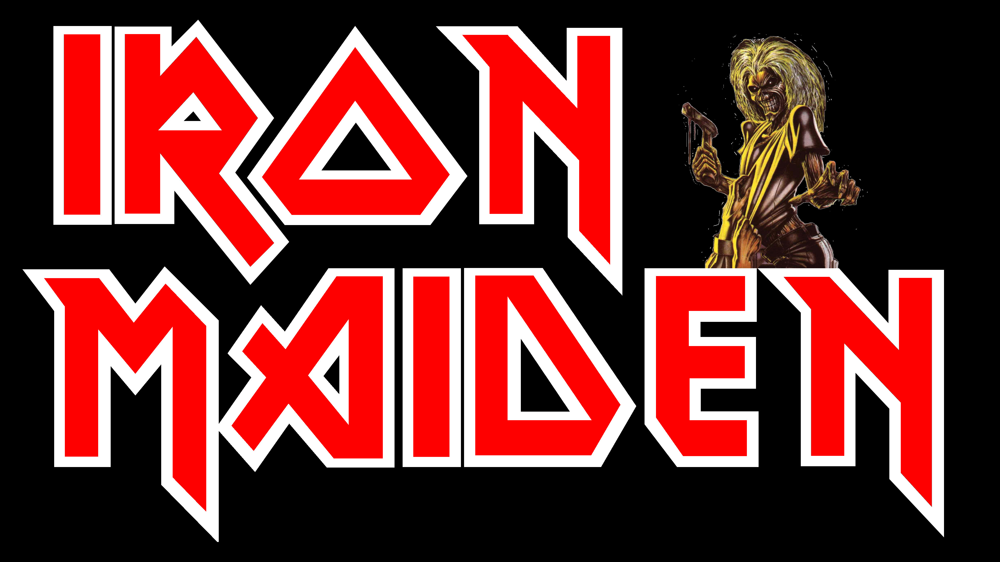
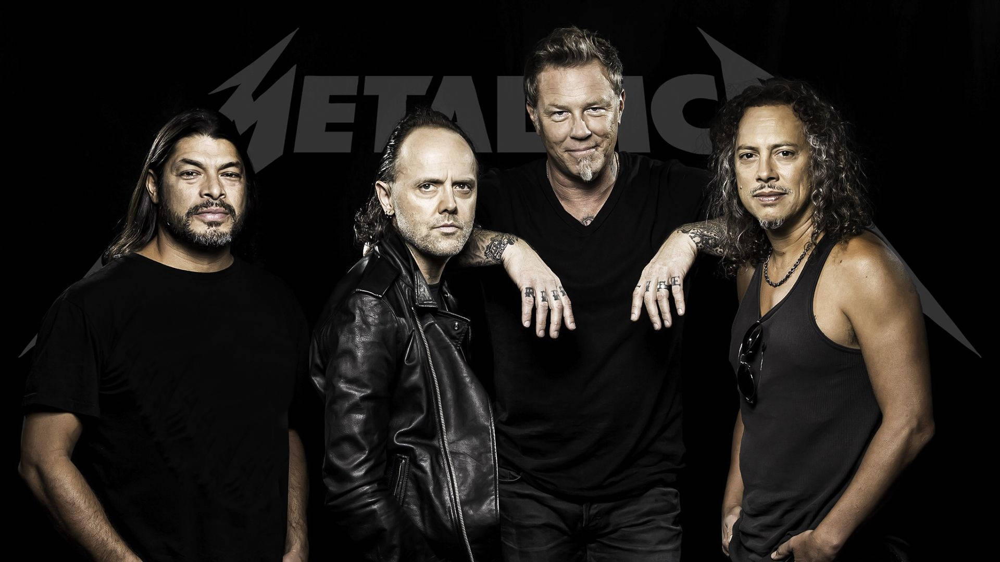

Bandas Icônicas do Rock e Metal
Explore as maiores bandas que definiram os gêneros.
Iron Maiden

Com mais de quatro décadas, Iron Maiden é uma das bandas mais influentes do heavy metal.
Metallica

Metallica trouxe uma nova era para o thrash metal, sendo pioneiros e referências até hoje.
Linkin Park

Um ícone do nu-metal, misturando rap e rock com vocais poderosos e letras impactantes.
System of a Down

Com suas letras políticas e estilo único, SOAD se tornou um marco no metal alternativo.